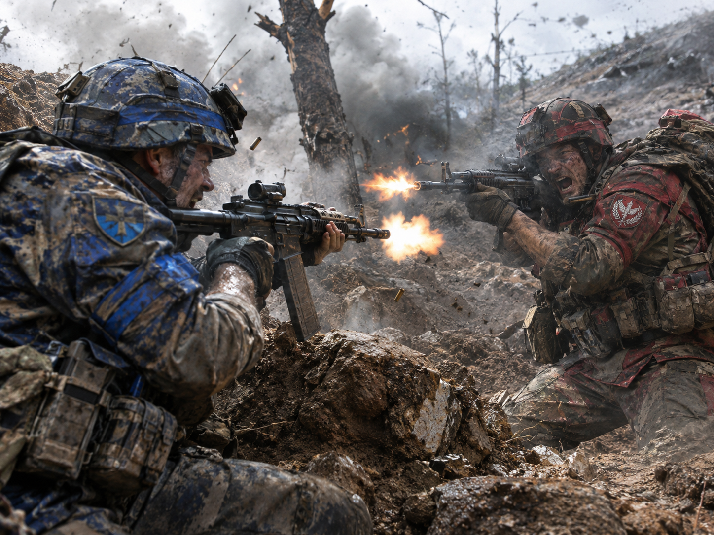

GAME TOPIA / PLAYER HANDBOOK
ARMAGEDDON
The Complete How to Play Guide

Bluenstein versus Redonia • Strategy, teamwork, supply, combat and victory
Draft for the future one-page How to Play website | M6.222 documentation edition | November 2026
One battlefield. Two nations. Ten time increments per game day. Every player plans; the game executes everybody’s orders together.
This comprehensive handbook is organized as one continuous reference. When converted to a website, each numbered section can become a scroll-to anchor and the persistent header can include a Return to Game button. This DOCX is an editable draft and is not a claim that every feature has passed final playtesting.
Contents
01 Game at a glance
02 Beginning a game
03 Joining, resuming and loading a saved game
04 Understanding the battlefield map
05 Selecting divisions and cities
06 Mouse and keyboard controls
07 Planning and plotting movement
08 Ready, execution and replay
09 Time, movement cost and carryover
10 Zones of Control and enemy contact
11 Combat and battle participation
12 Morale, retreat and surrender
13 Advance after combat
14 Terrain, bridges and obstacles
15 Supply and logistics
16 Cities, ownership and pacification
17 Resource Points and division production
18 Replacement soldiers
19 Teamwork, delegation and communication
20 Daily Situation Report and notifications
21 Artificial intelligence opponents
22 Winning the game
23 Practical example of a game day
24 Troubleshooting and frequently asked questions
25 Quick reference and glossary
01 Game at a glance
ARMAGEDDON is a simultaneous-orders operational wargame played on a map of hexagons representing approximately 25 kilometers each. Bluenstein is the blue nation; Redonia is the red nation. Players command divisions, defend cities, manage scarce resources and coordinate with human allies or an AI opponent.
The game alternates between Planning and Execution. During Planning, every human commander issues orders and clicks Ready. Once all enrolled humans are Ready, the server computes the game day, and each browser replays the same recorded results. One game day contains ten time increments (TIs), conceptually one hour each.
| Concept | In practice |
| Your role | Command the divisions and cities assigned to your player identity. |
| Your team | Allied human commanders share a nation but retain ownership of their divisions and cities. |
| Your orders | Movement routes, city production, delegation and other Planning decisions. |
| The battlefield | Prominent hex grid, geographic features, roads, cities, units and controls. |
| Your objective | Capture and pacify the enemy capital while preserving your own. |
02 Beginning a game
Open GameTopia and choose ARMAGEDDON.
Sign in using your registered account. Your permanent account identity is different from your name within any single game.
Choose Start New Game. The host sets up the battlefield and selects the nation, map options and player color.
Review the initiation screen, then start the game when the participating commanders are ready to begin.
Check the map, selected division panel, city ownership and first Planning report before issuing orders.
Available player ownership colors are distinct from national colors: blue/red identifies the nation, while a player-color outline or marker identifies which human controls an asset. The same account cannot occupy multiple positions in one game.
03 Joining, resuming and saved games
Join versus Resume
Choose Join when entering a newly started or newly loaded game session in which you have not yet reconnected. Choose Resume when returning to an active game session where your membership is already established. A newly loaded save is a new session; the person loading it resumes as host, while other restored participants should initially see Join, then Resume after reconnecting.
Persistence of membership
Disconnection does not surrender divisions, cities, player color or future orders. Membership persists until an authorized player explicitly kicks the participant. An enrolled but disconnected player remains Not Ready and blocks execution; the game does not quietly replace them with an AI.
Saved game
A valid autosave preserves the full state needed to resume a planning day. When opening one, verify the turn number, your national side, units, cities and remaining movement orders. If an autosave entry has missing host information or a placeholder date, record that as a lobby-display problem rather than assuming the game data were lost.
04 Understanding the battlefield map
The map is a clearly gridded hex battlefield. Terrain art is blended inside individual hexes to create natural coastlines, forests, mountains, rough ground and swamps. The visible lines are intentional: terrain pictures may be organic, but the hex boundary remains the authoritative movement and combat boundary.
Blue and red unit counters indicate national allegiance.
Thick player-colored outlines or owner markers identify the human commander responsible.
The movement route depicts the hexes a division is ordered to traverse.
Cities may show a controlling nation, player ownership and pacification progress separately.
Fog of war prevents you from inspecting hidden enemy positions.
Map display options
| Overlay / control | Purpose |
| Supply — S | Shows supply ratings and supply-related markers; negative supply warnings also stay visible automatically. |
| Zones of Control — Z | Shows hexes threatened by enemy divisions. |
| Cities — C | Shows city information, including production and pacification indicators. |
| Hex Control — H | Shows territorial control used for strategic situation awareness. |
| Replacements — R | Shows packets of replacement soldiers traveling from source cities. |
| End Positions — E | Preview the likely map positions after the planned movement interval. |
| Morale — M | Displays morale/effectiveness-related unit indicators. |
| Unit Symbols — U | Toggles NATO-style and illustrated unit counter symbols. |
05 Selecting divisions and cities
Left-click a friendly division to select it and open its division panel. This panel includes strength, morale/effectiveness, experience, supply, replacements, casualties, improved position, accumulated TIs and terrain. A division’s label must be synchronized with the authoritative server value: a blank or missing field is not the same thing as a legitimate zero.
Click an unoccupied city to open its city panel. If a division occupies the city, Shift + left-click can open the city rather than the division. City management includes player ownership, national control, pacification, Resource Points and production slots.
The Division and City panels are movable. A City panel is intended to appear about two to three screen inches from the selected city, when room permits, rather than permanently in the upper-right corner.
06 Mouse and keyboard controls
| Control | Action |
| Left-click division | Select or inspect a division. |
| Left-click empty hex | Clear selection. |
| Left-click unoccupied city | Open city management. |
| Shift + left-click occupied city | Inspect city instead of division. |
| Left-click and drag | Pan the map. |
| Mouse wheel | Zoom the battlefield. |
| Right-click destination | Plot or extend the selected division’s route. |
| Right-click selected division | Add a 1-TI pause at its current hex. |
| Shift + right-click route waypoint | Add or adjust a pause waypoint. |
| Esc | Undo last route step in the planning context or close eligible UI panels. |
| U | Switch illustrated / NATO unit symbols. |
| S / Z / C / H / R / E / M | Toggle the corresponding overlay or preview. |
The Controls button must remain visible on the battle screen. If the controls change in a later release, this handbook and the on-screen Controls button must be updated together.
07 Planning and plotting movement
Select a division you own.
Right-click the first desired destination hex, then continue right-clicking subsequent destinations.
Check the plotted line and cost information. The route can extend beyond the current day.
Add a pause at the unit or a route waypoint when you need it to wait for other forces.
Adjust or cancel your route while still Not Ready.
Click Ready once all orders and production decisions are complete.
A human teammate sees your unfinished plotted routes in your personal player color. Selecting an allied division for inspection can highlight its route in white, but inspection does not transfer control. During execution, the route already traversed should disappear progressively.
Important: Ready locks plotting. If you need to change any route, first cancel Ready. A visual line drawn after Ready must never imply the server accepted an order it rejected.
08 Ready, execution and replay
Each participating human has a Ready or Not Ready status visible to the team. AI-only sides do not require a human Ready button. Execution starts only after every enrolled human player on both sides has clicked Ready; offline-but-enrolled humans block it.
At the start of Execution the game plays a short trumpet alert if sound effects are enabled. The authoritative server computes the complete day once. Clients may replay with Play, Pause, Slow, Normal and Fast controls, and replay should use stored server events, not execute combat again or alter random outcomes.
During replay, firing, movement, retreat, surrender, production, city pacification and advances are displayed as discrete events. Acknowledgment windows stay on screen until the viewer closes them as required; this should not force other players’ replays to stop.
09 Time, cost and orders crossing midnight
Each day contains ten 1-TI increments. Divisions must accumulate the full movement cost of a destination hex before entering it. Unspent accumulated TI credit and the remaining ordered route persist into subsequent days unless canceled or interrupted by combat.
Example: a route requires 13 TIs. If a unit has accumulated and spent 10 hours in Day 4, Day 5 should still show the three-hour remainder needed for its next intended move. The next hex and its estimated entry cost should remain visible in planning.
Friendly divisions may pass through other friendly-occupied hexes if the moving division can pay the full transit cost and emerge into a legal free hex without stopping stacked with another division. An occupied intermediate hex is not itself a destination where two friendly units may stay.
10 Zones of Control and enemy contact
A combat division exerts a Zone of Control (ZOC) into adjoining hexes. A unit entering threatening territory may be stopped or forced into combat according to the pre-movement ZOC snapshot, not only the position shown after movement. An adjacent enemy division is always visible, even on concealing terrain.
Moving from one enemy ZOC into another is restricted. A division that must retreat into enemy ZOC suffers an additional penalty equal to the casualties it incurred in the battle, capped by its remaining strength. This effectively doubles battle casualties for that retreat when enough soldiers remain.
11 Combat and battle participation
When opposing orders create contact, the server determines a primary attacker and defender. Nearby friendly divisions connected to the engagement may contribute supporting fire when in proper range. Each participating division fires at most once per game day; supporting fire uses up that entitlement.
A combat action may involve several firing exchanges. The replay shows individual fires, casualties and a battle summary. Terrain, rivers, bridges, Improved Position, effectiveness and supply affect the result.
| Principle | Rule |
| No duplicate firing | A division may fire at most once per completed game day. |
| Simultaneous losses | A firing exchange evaluates losses based on the pre-volley state. |
| Improved Position | Built by remaining stationary; up to 50 points, with at most 30% incoming casualty protection. |
| River / stream | Unbridged attacking fire is penalized more than defending fire. |
| Battle report | Shows who fought, where, casualties and battle outcome; it is draggable. |
A battle summary winner represents the result of the casualty exchange; it does not itself guarantee an advance. Movement into a vacated enemy hex follows separate morale and advance rules.
12 Morale, retreat and surrender
Division effectiveness influences morale checks. A low current rating makes failure more likely. The division panel must show the actual current value and an unmistakable FAILING state where appropriate.
A first failed morale check puts the division into FAILING status and causes it to retreat if a destination is available. A second qualifying failed morale check while already FAILING causes surrender only if an active enemy division is adjacent. A unit that is isolated from every enemy must never surrender solely because of an internal check.
Surrendered units are removed from the visible battlefield before retreat or advance animations. Retreat and surrender have different red/blue soldier graphics to identify which nation experienced the event and use separate sound effects. A surrender counts once in the Daily Situation Report.
A retreat seeks safe open terrain first, then may displace friendlies, and only uses an enemy-ZOC destination when necessary. Retreating into a hostile ZOC adds casualties equal to the division’s combat casualties from that engagement.
13 Advance after combat
A primary attacking division may advance into the vacated defender hex when the defender retreats, surrenders, or is eliminated, subject to adjacency and occupancy. If the attacker retreats after failing morale in an ordinary attack, the defender does not counter-advance.
In a meeting engagement, when one side withdraws, an eligible opposing participant may advance into the vacated opposing hex. No unit advances into a hex still occupied by another active division.
Advance has an acknowledgment window followed by a three-second movement animation and sound. Retreat and surrender resolution must finish first, and the advanced unit remains visible in the final correct location.
14 Terrain, bridges and obstacles
| Terrain | Tactical effect and visual treatment |
| Plains / clear | Usually offers an easier movement and visibility environment. |
| Forest / woods | Conceals units beyond adjacent spotting and alters terrain combat modifiers. |
| Rough ground | Movement and combat differ from clear terrain; art must feather inside the rough hex. |
| Mountains | High elevation affects line of sight and movement; mountains can still be occupied and supplied. |
| Swamps | Difficult terrain with concealment and combat effects; wet vegetation should blend inside the hex. |
| Lakes | Impassable to divisions; shorelines gently curve inside each lake hex. |
| Rivers and streams | Crossings are more difficult to attack across, with bridges reducing the penalty. |
| Cities / urban | City center, multiple urban production hexes, strategic control and pacification. |
Approved attacking damage multipliers across water are 0.40 for an unbridged river, 0.70 for an unbridged stream, and 0.85 when crossing either over a bridge. The defender’s corresponding multiplier remains 1.00. Natural-looking road and water geometry must not change which hex is legally passable.
15 Supply and logistics
Supply is evaluated once per game day, at its conclusion. A division’s Supply Rating (SR) starts at +1 and may decline while supply is interrupted. A previously isolated unit can reconnect while its accumulated SR is still negative; current connectivity and the historical SR number should therefore be distinguishable.
Supply sources are qualifying friendly cities at zero pacification. A supply route must follow eligible friendly or otherwise legal connected hexes, subject to the game’s control and ZOC restrictions. Mountains are traversable for supply; lakes are not.
| SR | Automatic visual warning |
| +1 or 0 | Normal. No poor-supply outline required. |
| −1 to −2 | First warning color, shown without pressing S. |
| −3 to −5 | Severe warning color, shown without pressing S. |
| −6 or worse | Highest warning color and S marker. |
Press S for the detailed supply overlay. A unit may be physically connected yet still show a negative SR while recovering; a correct diagnostics view should say whether the current route is connected, blocked by control/ZOC, or blocked by terrain.
16 Cities, ownership and pacification
City nationality and human ownership are separate. A city belongs to a nation but is controlled by a particular player or by AI. A captured city is credited to the player controlling the division that actually completed the capture, not automatically to the oldest or senior commander on the side.
An enemy unit occupying a city, or exerting uncontested enemy ZOC into its city-center hex, can increase pacification one level in the appropriate game day. If friendly and enemy influence contest the city, progress must not rise. After all enemy occupation and enemy ZOC have departed, the pacification counter decreases toward zero.
Pacification progress is from 0/5 to 5/5. At completion, the nationality changes. The Cities overlay should identify the city’s nationality and current pacification with an unmistakable gold dashed border and colored label. Progress must update at the TI when it occurs, not a full day later.
17 Resource Points and division production
Each nation manages RPs, collected from qualifying city hexes and reduced by army maintenance at the beginning of each new day before planning. One city hex supports one production slot. Any city with pacification greater than zero cannot start or complete a division; work in progress is frozen. A canceled incomplete job must return 100% of its committed RPs.
| Division | Construction cost | Production time |
| Infantry | 6 RP | 3 days |
| Motorized | 8 RP | 4 days |
| Mechanized | 10 RP | 5 days |
| Armored | 12 RP | 6 days |
The Daily Situation Report should show RP carryover, current city income, maintenance deduction and available RPs in that order. New divisions must appear on their deployment hex when the arrival notification is shown and be available for orders on the first eligible planning turn.
18 Replacement soldiers
Replacement packets are different from newly constructed full divisions. Eligible friendly cities allocate a limited daily number of replacement soldiers to damaged divisions. The allocation runs from city to city, left to right across the map. Each source gives its replacements to the closest qualifying division that still needs them, using stable tie-breaking so clients agree on the result.
The replacement overlay shows packets traveling from cities to recipients; the recipient’s panel should show replacements on the way and received. Replacements cannot raise the unit above its authorized division strength.
19 Allied commanders, delegation and communications
Two or more humans may command the same nation. All team members can see each other’s plotted movement routes while Planning; their own selections appear white and other unselected paths use the owner’s color. A teammate cannot modify another player’s divisions or production orders without a formal delegation.
The Delegate control can transfer divisions, cities or both to another human on the same nation during Planning. The receiving commander’s player color appears on the transferred units and cities. Delegation is unavailable during execution.
The Communications window supports Common, Team and private channels including the opposing nation, with an explicit teammate notification when contacting an opponent. Push-to-talk is intended to be live audio while pressed, not a recording sent only after release. The browser may ask for microphone permission; network conditions may require voice relaying.
20 Daily Situation Report and notices
The Daily Situation Report appears at the start of each new game day and can be reopened with the report button. It summarizes events from the just-completed day and the RP position available for the new Planning phase.
For both Bluenstein and Redonia, show the number of divisions that retreated and the number that surrendered. These event counts are public: they must appear regardless of normal fog of war. Casualties, precise force strengths and economic totals on the opposing nation remain restricted unless the game is in the authorized Both Sides playtest view.
A good event count never equates divisions destroyed with divisions surrendered, nor treats a displacement as a morale retreat. A division that retreats twice in one day should be counted once in the daily division-retreat total unless the rule explicitly defines otherwise.
Notifications include fire, production, reinforcement arrival, city pacification, retreat, surrender and advance. Acknowledgment prompts must use clear national or player colors and should not hide the underlying unit without removing it from the replay state.
21 Artificial intelligence opponent
An AI commander is active only on a nation that has no human players. It does not share control of a side with humans. AI strategic planning occurs once at the beginning of the game day, followed by simultaneous execution, rather than reacting with new plans during each TI.
The planned AI personality is cautious: protect a threatened capital, maintain an approximately 20% mobile reserve, concentrate enough force to attack defended objectives, and normally avoid voluntary attacks below an estimated 1.5:1 strength advantage. An emergency capital-defense or recapture situation may justify an exception.
AI production uses the human RP and city production system. Its initial composition targets are approximately 45% Infantry, 25% Motorized, 15% Mechanized and 15% Armored, adjusted for current battlefield needs. These are targets rather than rigid quotas and still require extensive live testing.
22 Winning the game
A nation wins by capturing and fully pacifying the opposing capital under the game’s authoritative control rules. When that condition is satisfied, the game must enter a completed state, stop accepting further movement orders, and show every player a full victory splash naming the winning nation. The final replay, battle events, retreat and production notifications should finish in the correct order.
A game ending should be distinct from an abandoned lobby, missing host, voluntary player departure or temporary disconnection. The final day and winner should remain in the saved game state for review.
23 Example: one complete game day
The Daily Report opens, showing yesterday’s results and today’s RPs. You acknowledge it.
You select an infantry division and plot its route around a marsh; your ally sees that route in your player color.
Your ally plots a motorized division toward a crossroads; you see their route in their ownership color.
You inspect a city, continue a paused production job and decide not to spend all remaining RPs.
All human players click Ready. A trumpet sounds and Execution begins.
The server replays movement through ten TIs. A firing report appears near an engagement; fire and losses are recorded.
One division fails morale, withdraws and may suffer extra casualties if it enters hostile ZOC.
An eligible attacker advances into the vacated defender hex after surrender or retreat is resolved.
City pacification and reinforcement events display their current updates at the correct TI.
At the next Planning phase, unfinished routes and accrued TIs remain, while the Daily Situation Report lists retreats and surrenders for both nations.
24 Troubleshooting and frequently asked questions
| Question or problem | What to check |
| My unit’s Morale shows 0.0. | Verify server synchronization and effectiveness data; blank/invalid values must not be replaced by zero. |
| Why did my route not execute? | Check whether you were Ready when plotting; only accepted server orders execute. |
| Can my ally see my route? | Both players must be in the same game session and on the same nation; routes should synchronize while Planning. |
| Why is a division out of supply on friendly land? | Current SR can lag connectivity; inspect terrain, eligible city sources, hex control and enemy ZOC. |
| Why did a city stop producing? | Any pacification above zero freezes construction until the city returns to zero. |
| How do I reclaim RP from unfinished work? | Open the city during Planning, select the production slot and Cancel; verify server-confirmed refund. |
| Why did an infantry division surrender? | There must be a qualifying second failed morale check while adjacent to an enemy. |
| Why did my advance not happen? | The defending hex may still be occupied, the attacker may have failed morale, or adjacency may prevent it. |
| I cannot hear retreat or surrender audio. | Confirm Sound ON, browser audio permission and the SFX test buttons. Background music is OFF by default. |
| The game is not progressing. | An enrolled human may be offline or Not Ready; no automatic AI replacement occurs. |
25 Quick reference and glossary
| Term | Meaning |
| AI | Automated commander for a nation with no human players. |
| Capital | Strategic city whose pacification triggers victory. |
| Division | Smallest independently ordered combat formation in this game. |
| Fog of war | Enemy information hidden without legal observation. |
| IP | Improved Position: defensive benefit gained by stationary troops. |
| Pacification | Progress establishing uncontested control of a captured city. |
| Planning | Phase during which humans submit orders and mark Ready. |
| RP | Resource Points spent on division production and maintenance. |
| SR | Supply Rating; negative values impose supply warnings and combat/movement effects. |
| TI | Time Increment, one of ten execution increments per game day. |
| ZOC | Zone of Control exerted into hexes near a combat division. |
End of the How to Play guide. Future webpage design: a persistent contents sidebar, a search box, a Return to Game button, and scroll anchors for all 25 sections.
Editorial note: This guide documents the intended rules and current product workflow. Some visual features and multiplayer edge cases remain on the outstanding issue register and require playtest confirmation. The guide should be revised when those rules or controls change.